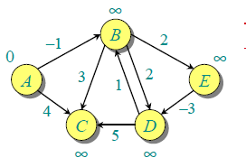
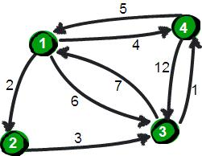

1. 最短路径
最短路径问题是图论研究中的一个经典算法问题，旨在寻找图（由结点和路径组成的）中两结点之间的最短路径。根据不同要求有不同的算法可供选择。
1.1. Dijkstra算法
原始版本找到两个顶点之间的最短路径，但是更常见的变体固定了一个顶点作为源节点然后找到该顶点到图中所有其它节点的最短路径，产生一个最短路径树。
贪心算法思想。
无法计算 含负权重、无向 的图！
时间复杂度是 (其中 为图的顶点个数)。通过斐波那契堆实现的戴克斯特拉算法时间复杂度是 (其中是边数)
算法步骤：
- 1.找到最短时间内能够到达的节点。
- 2.对于该节点的邻居节点，检查是否含有从起点通往他们更短的路径，如果有，就更新其开销。
- 3.重复这个过程，直到对每个节点都这样做。
- 4.计算最终的路径。

算法实现需要三个而外的空间存放中间结果：开销记录、父节点记录、处理标记。
# 图
graph = dict()
graph["a"] = dict(b=7, c=9, d=14)
graph["b"] = dict(c=10, f=15)
graph["c"] = dict(f=11)
graph["d"] = dict(c=2, e=9)
graph["e"] = dict(f=6)
# 开销
infinity = float("inf")
costs = dict(b=7, c=9, d=14, e=infinity, f=infinity)
# 父节点
parents = dict(b="a", c="a", d="a", e=None, f=None)
# 处理节点标记列表
processed = list()
def FindLowestCostNode(costs):
"""
查找当前未处理的节点中开销最小的节点
:param costs: 开销列表
:return: 开销最小的节点
"""
lowestCost = infinity
lowestCostNode = None
for node in costs:
cost = costs[node]
if cost < lowestCost and node not in processed:
lowestCost = costs[node]
lowestCostNode = node
return lowestCostNode
def Dijkstra():
node = FindLowestCostNode(costs) # 选择开销最小的节点
while node:
cost = costs[node] # 最小节点开销
neighbors = graph[node] # 最小节点的邻居节点字典
for n in neighbors.keys(): # 遍历最小节点的邻居节点
newCast = cost + neighbors[n] # 更新到邻居节点的开销
if costs[n] > newCast: # 如果旧的开销大于新的开销
costs[n] = newCast # 则更新新的开销
parents[n] = node # 并将父节点重新赋值
processed.append(node) # 处理列表新增处理后的节点
node = FindLowestCostNode(costs)
1.2. BellmanFords算法
与Dijkstra算法 的使用环境一致
动态规划 思想
可以处理边的权值为 负数 并且 带回路 的图。
时间复杂度过高，高达 。
算法步骤:
- 1.创建源顶点 v 到图中所有顶点的距离的集合 distSet，为图中的所有顶点指定一个距离值，初始均为 Infinite，源顶点距离为 0；
- 2.计算最短路径，执行 V - 1 次遍历；(V为顶点数)
- 对于图中的每条边：如果起点 u 的距离 d 加上边的权值 w 小于终点 v 的距离 d，则更新终点 v 的距离值 d；
- 3.检测图中是否有负权边形成了环，遍历图中的所有边，计算 u 至 v 的距离，如果对于 v 存在更小的距离，则说明存在环。

开始时候，A到其他各点的距离都为∞，表示不可达。A到A本身的距离为0。
按照以下的顺序处理所有的边：(B,E), (D,B), (B,D), (A,B), (A,C), (D,C), (B,C), (E,D)。(边的顺序可以改变，最多遍历此序列5-1 = 4 次)
每遍历一次，更新下表。
基本思想是，从A到点U的距离加上U到点V的距离如果小于从A到点V的距离，则更新从A到点V的距离。
if d(A->U) + d(U->V) < d(A->V):
d(A->V) = d(A->U) + d(U->V)
| # | 0 | 1 | 2 | 3 | 4 |
|---|---|---|---|---|---|
| A | 0 | 0 | 0 | 0 | 0 |
| B | ∞ | -1 | -1 | -1 | |
| C | ∞ | 2 | 2 | 2 | |
| D | ∞ | ∞ | -2 | -2 | |
| E | ∞ | ∞ | 1 | 1 |
可以看到，遍历了第二遍以后，A到其他各点的距离已经不在变化，说明处理结束，同时也说明了图中没有 回环！！
from collections import namedtuple
# 图
graph = dict()
graph["D"] = dict(B=1, C=5)
graph["B"] = dict(C=3, D=2, E=2)
graph["A"] = dict(B=-1, C=4)
graph["E"] = dict(D=-3)
# 开销
infinity = float("inf")
costs = dict(A=0, B=infinity, C=infinity, D=infinity, E=infinity)
# 父节点
parents = dict()
EdgeType = namedtuple("edge", "U,V,len")
def BellmanFord():
# 构造边集合
edgeList = list()
for U, value in graph.items():
for V, length in value.items():
edgeList.append(EdgeType(U=U, V=V, len=length))
# 算法主体
for i in range(len(graph.keys()) - 1): # 遍历顶点数-1次
for edge in edgeList: # 遍历的所有的边集合
if costs[edge.U] + edge.len < costs[edge.V]: # relaxa(松弛主体)
costs[edge.V] = costs[edge.U] + edge.len
parents[edge.V] = edge.U
# 回环判断
for edge in edgeList:
if costs[edge.U] + edge.len < costs[edge.V]:
return True
return False
if __name__ == "__main__":
print("It's have loopback？\n{answer}".format(answer="Yes!" if BellmanFord() else "No!"))
1.3. FloydWarshall算法
解决任意两点间的最短路径的一种算法，可以正确处理有向图或负权（但不可存在负权回路）的最短路径问题，同时也被用于计算有向图的传递闭包。
动态规划思想。
无法处理带 负权回路 的图！
时间复杂度为 ，空间复杂度为 。
算法步骤:
设 为从到的只以 集合中的节点为中间节点的最短路径的长度。
- 若最短路径经过点k，则 ；
- 若最短路径不经过点k，则 。
因此， 。

# 图
infinity = float("inf")
graph = dict()
graph["a"] = dict(a=0, b=2, c=6, d=4)
graph["b"] = dict(a=infinity, b=0, c=3, d=infinity)
graph["c"] = dict(a=7, b=infinity, c=0, d=1)
graph["d"] = dict(a=5, b=infinity, c=12, d=0)
def Floyd():
for k in graph.keys(): # 经过的第K个点
for i in graph.keys():
for j in graph.keys():
if graph[i][j] > graph[i][k] + graph[k][j]:
graph[i][j] = graph[i][k] + graph[k][j]
1.4. 归纳
| 算法 | 解决类型 | 思想 | 时间复杂度 |
|---|---|---|---|
| Dijkstra | 单源最短路径，从源点到其他点的最短路径，无法计算 含负权重、无向 的图！ | 贪心算法 | |
| BellmanFords | 单源最短路径，从源点到其他点的最短路径，可以处理边的权值为 负数 并且 带回路 的图。 | 动态规划 | |
| Floyd-Warshall | 多源最短路径，任意两点间的最短路径，无法处理带 负权回路 的图！ | 动态规划 |